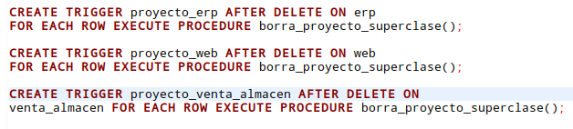
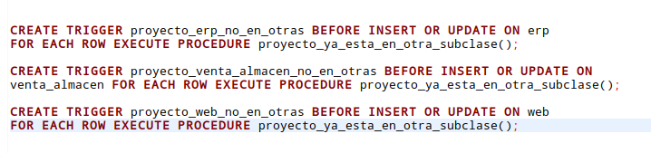

Una visión perversa
Este blog trata sobre la actividad realizada para el laboratorio 5 de la materia
de Administración de Bases de Datos en el cual cada día de la semana, del 7 al 11
de Octubre, se nos presentaban diferentes retos a realizar.
Dia 1
Trabajando con la base de datos que ya conocemos: ucasoft, se nos pidió
validar el atributo DUI de la tabla miembro. Para lo cual se tenía
que crear una función, la cual recibe el atributo como parámetro y retorna
un booleano indicando si el atributo es correcto o no, además se debe validar
que tenga la longitud, el formato y digito de comprobación correctos.
Para empezar se crea una función que recibirá como parámetro el atributo DUI.
Lo que se hace en esta función es:
-
Por medio de un if se verifica la longitud de la cadena, si esta es diferente
a 10 (10 es el numero de caracteres presentes en un DUI) se retorna falso.
Lo cual indicaría que el atributo que fue recibido no es correcto.
-
En otra condición (else if) se verifica el formato del dui, para lo cual se hace
uso de expresiones regulares, con lo cual se busca que una cadena de texto tenga
cierta combinación de caracteres. En este caso, se busca que tenga 8 números (0-9)
seguido por un guión y luego otro número más ('[0-9]{8}-[0-9]'). Si el atributo no cumple esta condición
se retornará falso.
-
Finalmente, en un else comprobará que el digito verificador sea correcto para lo cual
se hace uso del siguiente algoritmo:
- Se declaran las variables: suma, resto, resta y contador.
-
La variable suma se inicializa en 0, mientras contador en 9 siendo la última
posición de la cadena. De esta manera se inicia un loop, el cual terminará
cuando contador llegue a 1.
-
Dentro del loop a la variable suma se le irá asignando la suma de cada digito
del dui multiplicado por la posición en la que se encuentra (la posición empezando
desde 9 hasta llegar a 2).
-
Para obtener el digito que se encuentra en cada posición se hace uso de substring,
la cual recibe tres parametros: la cadena principal de la que se extraerá el caracter,
La posición desde la cual iniciará la extracción (opcional) y el numero de caracteres
que serán extraídos (opcional).
-
El resto se obtendrá del módulo 10 del resultado obtenido en la suma.
-
La resta se obtiene de 10 menos el resultado de resto.

Dia 2
Este día el ejercicio consistía en crear una función que retornara un trigger. Teniendo en cuenta la relación
que existe entre los miembros y el departamento en el que trabajan, y otra en sentido contrario para aquellos
miembros que son representantes del departamento, se debe evitar que una persona que trabaje en un departamento
sea responsable de otro departamento.
Por un lado, la función deberá rechazar la inserción o actualización de un departamento con un representante que
no trabaje para dicho departamento, por otro lado, si hubiera una actualización del departamento en el que un
miembro trabaja, ésta deberá rechazarse si resultara que el miembro es el representante del mismo.
-
Se declaran variables de tipo record, las cuales son similares a las variables tipo fila pero sin una estructura
predefinida.
-
En un if se verifica que tabla ha sido modificada, haciendo uso de TG_RELNAME, el cual indica el nombre de una tabla que causa la invocación de un
trigger.
-
Si la tabla mencionada anteriormente es 'departamento', se prosigue a hacer una subconsulta, en la que se verifica si el
dui del miembro representante es el mismo que el dui del miembro.
-
Si la denominación del departamento no es la misma que la del miembro que se quiere hacer representante, se lanzará una
excepción.
-
Si la tabla es 'miembro', se hace una consulta en la que se obtiene la cantidad de departamentos de la que el miembro es
representante, si este numero es diferente de 0 se levanta una excepción indicando que el miembro no puede cambiarse de
departamento porque ya es representante de uno.

Dia 3
Para el ejercicio en este dia tambien se requería crear un trigger que actuara tanto en un INSERT como en un UPDATE a la tabla
departamento y sus subclases relacionadas. Cuando se hiciera un INSERT sobre la tabla tabla miembro habría que verificar la existencia
de tal miembro en su correspondiente subclase. Para eso se hizo un IF para cada subclase, donde se verificó que existiera un miembro con
el DUI del miembro insertado en la tabla NEW del trigger, y si este no existía en la subclase correspondiente, se muestra un error.

El caso del UPDATE es un poco más complejo, pues requiere realizar un DELETE seguido por un INSERT a la subclase correspondiente con unas
validaciones extras, mostradas a continuación:
-
Ya existe un trigger que al borrar de una subclase (ingeniería, ventas o gestión) borra automáticamente de la superclase miembro.
-
Hay otro trigger que impide que se inserte directo en la superclase para validar la totalidad de esa especialización así como que se respete
que la especialización es disjunta: esto implica que dentro de la función cuando se quiera insertar en una subclase tendrá que hacerse una
transacción con el correspondiente FK diferido.
Para esto se tuvo que realizar el borrado normal y luego realizar un DEFERRED de un constraint de foreign key entre miembro y departamento, para poder
realizar el INSERT sin ningún problema.

Dia 4
El ejercicio para este día consistía en crear ciertos triggers para una especialización disjunta parcial, la cual tiene como superclase
a la tabla proyectos y a la subclases: web, erp y venta_almacen.

Se deben tomar en cuenta las siguientes cosas:
-
Como es disjunta hay que asegurar la independencia de los miembros de subclases de proyectos, y también la eliminación en la superclase tras el borrado en la subclase.
-
Como la especialización no es total, en este caso sí puede haber objetos solamente en la superclase, pero atención, éstos deben tener código de tipo 'O' o se deberá
rechazar la inserción, también se debe validar con los otros códigos que los objetos deben estar previamente en las subclases correspondientes, o se debe rechazar
la operación. Por suerte ya hay un trigger que impide el ingreso de un proyecto cuyo código no sea válido, así que nos podemos ahorrar ese trabajo.
Para este ejercicio se debe desarrollar:
-
Una función que cuando la elimine a algún elemento de las subclases lo eliminen automáticamente de la superclase. Los triggers para lanzarla son los siguientes:

-
Una función que, dado que la especialización es disjunta, garantice que no pueda existir el mismo objeto en más de una subclase.

-
Una función para comprobación de que los proyectos están siendo introducidos en la subclase correcta. Es importante notar que aunque la especialización es parcial,
si los proyectos son de tipo Web, Venta_almacen o ERP, deben ser a la vez introducidos en la subclase correspondiente y en proyecto, como si fuera total. Para ello
debe tomarse en cuenta que los respectivos FK de las subclases a la superclase son diferibles.
Dia 5
Este día, viernes 11 de Octubre, fue el final de la actividad, y al fin se reveló la identidad de
Ale. Para esto fuimos convocados en el aula Magna V a las 5 de la tarde.
Revelación de la identidad de Ale.
Kurt es asesinado por Ale.